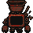
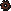

Пиксельное окно с его же экраном вместо портрета: лицо шевелится, пока идёт текст, и застывает на нужной эмоции в конце. Два режима размещения — пузырь над ним и нижняя панель. Клик по сцене или пробел — следующая реплика (во время печати — домотать).


Talk01 и Talk02 — получается «рот шевелится».
На последнем символе встаёт лицо-эмоция реплики..,!?… и коротким блипом
на каждый 2-й символ (тон зависит от символа — получается «речь» без озвучки).steps(3)), а не плавным лерпом —
иначе выбивается из пиксельной подачи.Emotes/*.png — средний палец, кучку, череп, «ну-ну», лайк/дизлайк,
язык, разбитое сердце, крестик, ! и ?. Та же сетка
14×11 и те же два красных, что у лица: для кода это просто другая картинка
в том же слоте. Выскакивают рывком в две ступени.Binny_DialogFrame.png 24×24, слайс 8.
Тянется на любой размер окна без искажения углов.| здесь | в UXML / USS |
|---|---|
.dlg + border-image |
VisualElement, background-image = рамка,
-unity-slice-left/right/top/bottom: 8,
-unity-slice-scale: 4 |
.dlg__name |
Label с border-width и фоном (или 9-slice
Binny_NamePlate.png) |
.dlg__portrait / .dlg__screen |
VisualElement, background-image меняется из C#
(style.backgroundImage = new StyleBackground(faceSprite)) |
.dlg__text |
Label, текст набирается корутиной; шрифт —
-unity-font-definition, нужен пиксельный TTF/битмап-шрифт |
.dlg__next, мигание |
VisualElement + переключение класса
.dlg__next--off по таймеру (USS-анимаций с keyframes нет) |
.dlg--bubble позиционирование |
position: absolute + left/top из кода, как уже
сделано в LevitationBar (world → panel каждый кадр) |
.dlg--in (steps) |
2–3 состояния через классы по таймеру, либо
transition на scale с коротким временем |
image-rendering: pixelated |
у спрайтов Filter Mode = Point; PanelSettings → Constant Pixel Size, Scale 4 |